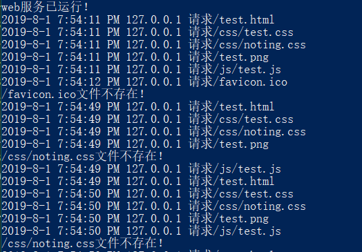

如何安装node.js，如何搭建一个简易的http服务器我这里就不再赘述了，不懂的同学可以先去学习一下。当然了，我写的也就属于简易版的增强版，大家有什么高见的欢迎提出，然后进入正题。
|-server.js
|-router.js
|-test.html
|-css|-test.css
|-js |-test.js//原生模块
var http = require('http');
var fs = require('fs');
var url = require('url');
//自定义模块
var router = require('./router.js');
http.createServer(function(request,response){
//获取客户端访问的路径
var pathname = url.parse(request.url).pathname;
//如果用户只输入域名就改变访问路径，并发送主页的内容给客户端
if(pathname == "/"){
pathname = "/index.html";
}
//获取当前请求客户端的IP地址
var ipv4 = get_client_ipv4(request);
//输出日志到控制台
showLog(ipv4,("请求"+decodeURI(pathname)));
//判断文件是否存在
fs.exists(__dirname + decodeURI(pathname),function(exists){
if(exists){
//使用router模块的函数
router.readFileBySuffixName(pathname,fs,request,response);
}else{
console.log(decodeURI(pathname)+"文件不存在！");
//文件不存在，向客户端发送404状态码，并发送该文件不存在的字符串
response.writeHead(404,{"Content-Type":"text/plain"});
response.end(pathname+"文件不存在！");
}
});
}).listen(80); //监听80端口
console.log('web服务已运行！');
/**
* @desc 获取IPV4地址
* @param req htttp.request
* @return string 32位IP地址
*/
function get_client_ipv4(req) {
//获取任意浏览器的IP地址，
var ip = req.headers['x-forwarded-for'] ||
req.ip ||
req.connection.remoteAddress ||
req.socket.remoteAddress ||
req.connection.socket.remoteAddress || '';
//获取到的IP地址中存在IPV4和IPV6的地址，我们只需要IPV4的地址
if(ip.split(',').length>0){
ip = (ip.split(',')[0]).match(/(\d+\.\d+\.\d+\.\d+)/)[0];
}
return ip;
};
/**
* @desc 向控制台输出日志，自动在头部添加时间、地址
* @param ipv4 string
* @param message string
*/
function showLog(ipv4,message){
//获取当前时间
var date = new Date();
//转换为本地时间的字符串形式并输入到控制台
console.log(date.toLocaleDateString() + " " + date.toLocaleTimeString() +
" " + ipv4 + " " + message);
}首先引入模块，使用http.createServer创建http服务器，并监听80端口；http.createServer的回调函数接收两个值，一个request请求对象，一个response响应对象，request对象可以获取到客户端请求的信息，response对象用来返回数据到客户端；上面创建了两个简单的工具函数，分别用来获取客户端的IPV4地址、向控制台输出日志；使用fs.exists函数判断客户端请求的文件是否存在，如果不存在则返回404状态码，如果存在，则使用下面router.js中创建的readFileBySuffixName函数，读取相应的文件并根据后缀名设置响应头，然后发送数据到客户端。
/**
* @desc 根据后缀名读取文件
* @param pathname string 文件路径 url.parse(request.url).pathname
* @param fs fs
* @param request htttp.request
* @param response https.response
*/
exports.readFileBySuffixName = function(pathname,fs,request,response){
var ext = pathname.match(/(\.[^.]+|)$/)[0];//取得后缀名
switch(ext){ //根据后缀名读取相应的文件，设置响应头，并发送到客户端
case ".css":
case ".js":
//读取文件
fs.readFile("."+request.url,'utf-8',function(err,data){
if(err) throw err;
response.writeHead(200,{ //根据不同的后缀设置不同的响应头
"Content-Type":{
".css":"text/css",
".js":"application/javascript",
}[ext]
});
response.write(data); //发送文件数据到客户端
response.end(); //发送完成
});
break;
//jpg、gif、png后缀的图片
case ".jpg":
case ".gif":
case ".png":
//二进制读取文件
fs.readFile("."+decodeURI(request.url),'binary',function(err,data){
if(err)throw err;
response.writeHead(200,{
"Content-Type":{
".jpg":"image/jpeg",
".gif":"image/gif",
".png":"image/png",
}[ext]
});
response.write(data,'binary'); //发送二进制数据
response.end();
});
break;
case ".mp4":
//读取文件的状态
fs.stat('.'+decodeURI(request.url),function(err,stats){
if(err){
if(err.code === 'ENOENT'){
return response.sendStatus(404);
}
response.end(err);
}
//断点续传，获取分段的位置
var range = request.headers.range;
if(!range){
//206状态码表示客户端通过发送范围请求头Range抓取到了资源的部分数据
//416状态码表示所请求的范围无法满足
return response.sendStatus(416);
}
//替换、切分，请求范围格式为：Content-Range: bytes 0-2000/4932
var positions = range.replace(/bytes=/,"").split("-");
//获取客户端请求文件的开始位置
var start = parseInt(positions[0]);
//获得文件大小
var total = stats.size;
//获取客户端请求文件的结束位置
var end = positions[1] ? parseInt(positions[1],10):total -1;
//获取需要读取的文件大小
var chunksize = (end-start) + 1;
response.writeHead(206,{
"Content-Range":"bytes "+ start+"-"+end+"/"+total,
"Accept-Ranges":"bytes",
"Content-Length":chunksize,
"Content-Type":"video/mp4"
});
//创建读取流
var stream = fs.createReadStream('.'+decodeURI(request.url),{start:start,end:end})
.on("open",function(){
stream.pipe(response); //读取流向写入流传递数据
}).on("error",function(err){
response.end(err);
});
});
break;
case ".rar":
//同步读取文件状态
var stats = fs.statSync("." + decodeURI(request.url));
response.writeHead(200,{
"Content-Type": "application/octet-stream", //相应该文件应该下载
//模板字符串
"Content-Disposition": `attachment; filename = ${pathname.replace("/","")}`,
"Content-Length":stats.size
});
//管道流
fs.createReadStream("." + decodeURI(request.url)).pipe(response);
break;
//以上都不匹配则使用默认的方法
default:
fs.readFile('.'+pathname,'utf-8',function(err,data){
response.writeHead(200,{
"Content-Type":"text/html"
});
response.write(data);
response.end();
});
}
}router.js文件中只有一个readFileBySuffixName函数，该函数的作用是判断客户端访问文件的后缀名，css、js、图片、mp4视频、rar文件等都能成功返回到客户端；其中视频和下载文件使用流传输；因为如果不使用流的话，服务器要先缓存文件，然后再发送文件到客户端；使用HTML5视频的客户端会发送一个Content-Range的值到服务器，服务器根据这个range值读取一个文件指定的部分，并返回这个特定的部分数据到客户端，就实现了视频的断点续传，你可以随意的跳转到视频的任意一部分了！
node ./server.js服务器端输出日志和测试页面

favicon.ico文件是该页面的图标文件，第一次进入页面浏览器会自动请求。